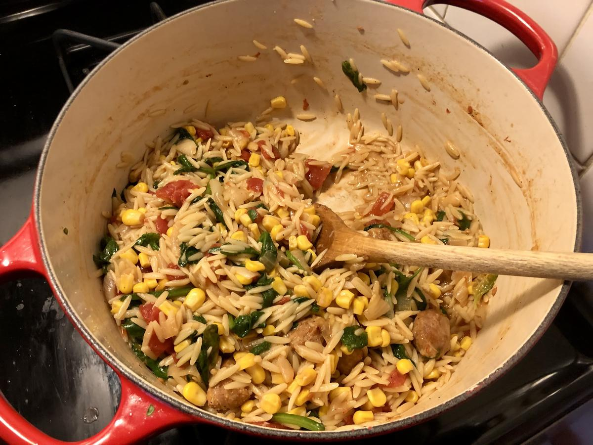

Based on https://www.skinnytaste.com/one-pot-orzo-with-sausage-spinach-and-corn/#recipe
Personal rating: 5 / 5

toss in up to a few handfuls of spinach to wilt in the last few minutes
1/4 cup freshly grated Parmesan
black pepper
Optionally add Zucchini or other vegetables with the peas
Remove the sausage from the casing, break up, and cook in a Dutch oven for 5 minutes on medium-high heat
Add the onion, salt, and garlic powder and saute until golden (~5 min)
Add the corn and tomatoes and cook until reduced (~10 min)
Add the orzo, chicken broth, frozen peas, and any additional seasonings, stir to combine then bring to a boil. Stir and scrape the bottom to keep orzo from sticking
Reduce heat to medium-low and simmer 10 minutes
Top with freshly grated Parmesan and black pepper
Related to the Broccoli Cheddar Chicken and Rice Casserole and the Zucchini Pasta